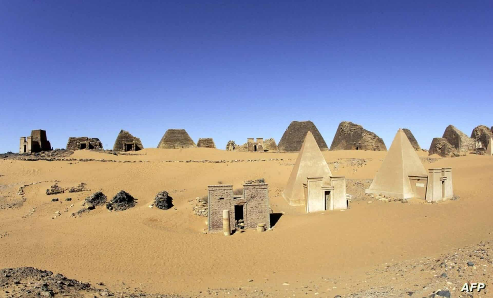
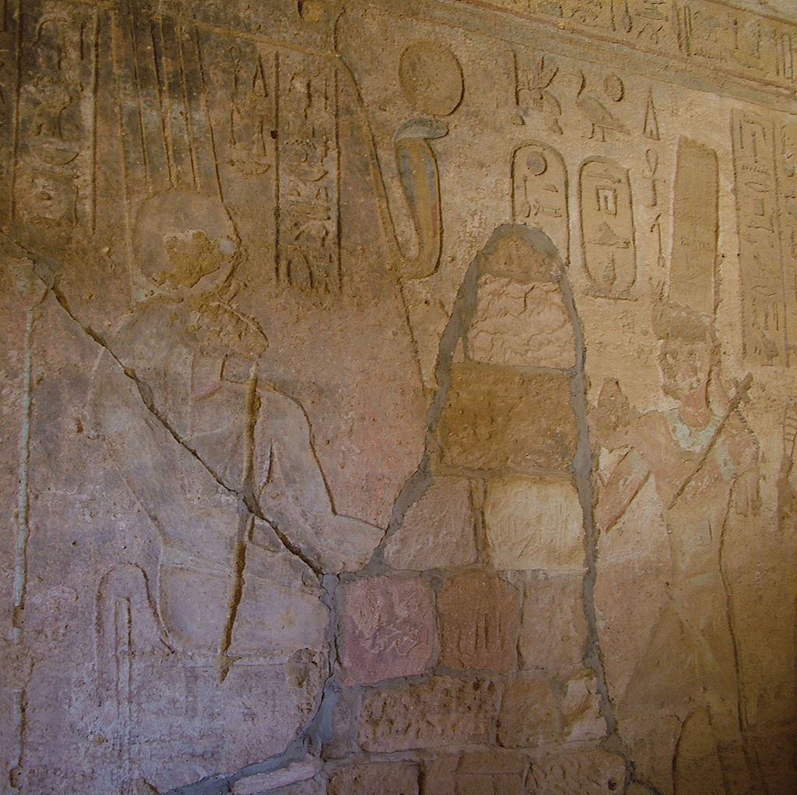
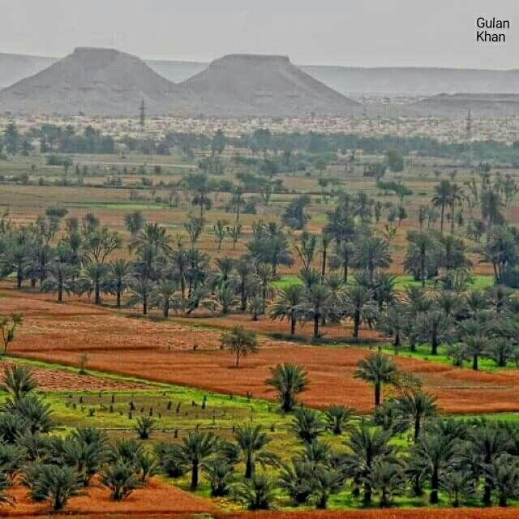
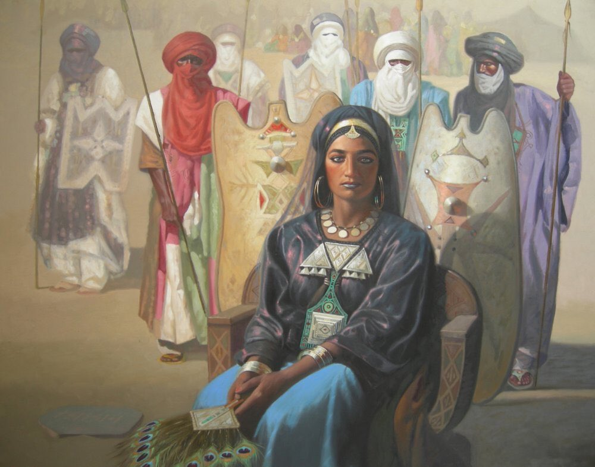
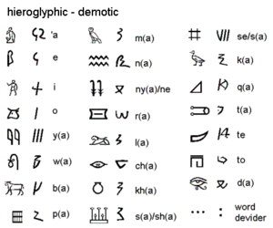

الحضارة السودانية القديمة
السودان كان موطنًا لواحدة من أعظم الحضارات في أفريقيا، امتدت من مملكة كوش إلى مروي ونبتة، وامتزجت بثقافات مصرية ونوبية فريدة.
مملكة كوش
طلق اسم كوش من قديم الزمان على جزء من منطقة النوبة يشمل المنطقة جنوب الشلال الثاني والتي تمثل بلاد النوبة العليا، حيث قامت حضارة وادي النيل النوبية الكوشية. بدأ الحكم الكوشي في النوبة بعد انهيار العصر البرونزي وتفكك المملكة المصرية الحديثة. تمركزت كوش في نبتة (الآن كريمة، السودان) خلال مرحلتها الأولى. تأثرت المملكة الكوشية بشكل كبير بمصر القديمة ثقافياً واقتصادياً وسياسياً وعسكرياً. بعد أن امتدت سيطرة كاشتا («الكوشي») إلى مصر العليا في القرن الثامن قبل الميلاد وتمكن خلفائه من السيطرة على مصر السفلى بعد ذلك، أصبح ملوك كوش أيضًا فراعنة الأسرة الخامسة والعشرين في مصر لنحو قرن من الزمن، حتى هزمتهم الإمبراطورية الآشورية الحديثة تحت حكم أشوربانيبال، وطردهم من مصر الفرعون إبسماتيك الأول. خلال العصور الكلاسيكية القديمة، كانت العاصمة الكوشية تقع في مروي. في الجغرافيا اليونانية المبكرة، كانت المملكة المروية تعرف باسم إثيوبيا. استمرت مملكة كوش وعاصمتها مروي حتى القرن الرابع الميلادي، ثم ضعفت وتفككت بسبب المشاكل الداخلية وتدمير العاصمة من قبل مملكة أكسوم. بعد ذلك أقام النوبيون ثلاثة ممالك مسيحية، وهي نوباتيا، المقرة وعلوة. الاسم تمثل كلمة كوش عرقية السكان الأصليين الذين أسسوا الحضارة النوبية، ويظهر هذا المصطلح في أسماء النوبيين الكوشيين، مثل الملك كاشتا والذي يعني في ترجمته (كوشي)، وجغرافياً يشير اسم كوش إلى المنطقة الواقعة جنوب الشلال الأول بشكل عام. التاريخ الأصول تمثال الملك الكوشي أسبالتا، العصر النبتي (ق. 620–580 ق.م) من المسجل تاريخيا قيام منتوحتب الثاني، مؤسس المملكة المصرية الوسطى في القرن الحادي والعشرين قبل الميلاد، بحملات ضد كوش في العامين التاسع والعشرين والحادي والثلاثين من حكمه. هذه أقدم إشارة مصرية إلى كوش. وقد كانت المنطقة النوبية تسمي بأسماء أخرى في عصر المملكة القديمة. تحت حكم تحتمس الأول، قامت مصر بعدة حملات جنوبًا. وأدى ذلك في النهاية إلى ضمه للنوبة ق. 1504 ق.م . بعد الفتح، تم تمصير حضارة كرمة بشكل متزايد، لكن استمرت بعض التمردات لمدة 220 عامًا حتى ق. 1300 ق.م . ومع ذلك، أصبحت النوبة مقاطعة مهمة في المملكة الحديثة، اقتصاديًا وسياسيًا وروحيًا، وأقيمت بعض الاحتفالات الفرعونية الكبرى في جبل البركل بالقرب من نبتة. كمستعمرة مصرية من القرن السادس عشر قبل الميلاد، كان يحكم النوبة («كوش») نائب الملك المصري في كوش. مع تفكك المملكة الحديثة حوالي عام 1070 قبل الميلاد، أصبحت كوش مملكة مستقلة تتمركز في نبتة في شمال السودان الحديث. من الصعب تحديد مدى الاستمرارية الثقافية/السياسية بين حضارة كرمة ومملكة كوش المتعاقبتين زمنياً. بدأت الدولة الأخيرة بالظهور حوالي 1000 قبل الميلاد، بعد 500 سنة من نهاية حضارة كرمة. بحلول عام 1200 قبل الميلاد، لم يعد هناك تواجد مصري في دنقلا. بحلول القرن الثامن قبل الميلاد، ظهرت المملكة الكوشية الجديدة من منطقة نبتة. أول ملك كوشي، ألارا، كرّس حياة أخته لعبادة آمون في معبد الكوة الذي أعيد بناؤه، في حين أعيد بناء المعابد أيضًا في البركل وكرمة. تضع لوحة تذكارية لكاشتا في إلفنتين الكوشيين على الحدود المصرية بحلول منتصف القرن الثامن. هذه الفترة الأولى من تاريخ المملكة، «النبتية»، خلفتها الفترة «المروية»، عندما انتقلت المقابر الملكية إلى مروي حوالي 300 قبل الميلاد. دفن الكوشيون ملوكهم مع جميع حاشيتهم في مقابر جماعية. يشير علماء الآثار إلى هذه الممارسات على أنها "Pan-grave culture". وقد تم تسميتها بهذا الاسم بسبب طريقة دفن الرفات. كانوا يحفرون حفرة ويضعون الحجارة حولهم في دائرة. قام الكوشيون أيضًا ببناء تلال وأهرامات دفن، وعبدوا بعض الآلهة المصرية، وخاصة آمون وإيزيس. مع عبادة هذه الآلهة، بدأ الكوشيون في أخذ بعض أسماء الآلهة كأسماء عرشهم. كان حكام كوش يعتبرون حراسًا لدين الدولة وكانوا مسؤولين عن الحفاظ على منازل الآلهة. يعتقد بعض العلماء أن الاقتصاد في مملكة كوش كان نظام «إعادة توزيع». بحيث تجمع الدولة الضرائب في شكل فائض من المنتجات وستعيد توزيعها على الشعب. يعتقد البعض الآخر أن معظم المجتمع عمل على الأرض ولم يطلب شيئًا من الدولة ولم يساهم بشيئ تجاهها كذلك. يبدو أن شمال كوش كان أكثر إنتاجية وثراء من المنطقة الجنوبية. غزو مصر أقصى توسع لمملكة كوش في 700 قبل الميلاد تتجلى المقاومة تجاه الأسرة المصرية الثامنة عشرة من قبل كوش المجاورة في كتابات المقاتل المصري أحمس ابن إيبانا. في نهاية الفترة الانتقالية الثانية (منتصف القرن السادس عشر قبل الميلاد)، واجهت مصر تهديدات وجودية مزدوجة - الهكسوس في الشمال والكوشيون في الجنوب. قام المصريون بحملات لهزيمة كوش وغزو النوبة تحت حكم أمنحتب الأول (1514-1493 قبل الميلاد). في كتابات أحمس، وصف الكوشيون بأنهم رماة، «الآن بعد أن قام جلالته بقتل بدو آسيا، أبحر إلى أعلى النوبة لتدمير الرماة النوبيين». تحتوي كتابات المقبرة على إشارتين آخرين إلى الرماة النوبيين في كوش. كانت مملكة كوش متأثرة بالحضارة المصرية بدرجة كبيرة، فكان آمون إلهها الرئيسي، واستخدمت أساليب الفن والكتابة المصرية. وقد كان التمصير الثقافي في أعلى مستوياته في عهد كل من كاشتا وبعنخي. في عصر السيطرة المصرية، كان أبناء العائلات النوبية المهمة يتم إرسالهم للتعليم في مصر ثم يعودون إلى كوش لتعيينهم في مناصب بيروقراطية لضمان ولائهم. تبنت هذه النخبة النوبية الكثير من العادات المصرية ومنحوا أبناءهم أسماء مصرية، وعلى الرغم من استمرار بعض العادات والمعتقدات النوبية إلا أن التمصير كان هو الغالب في الأفكار والممارسات والتصويرات الفنية. على الرغم من ذلك، لم تكن ثقافة كوش مجرد حضارة مصرية في بيئة نوبية. طور الكوشيون لغتهم الخاصة، التي تم التعبير عنها أولاً عن طريق الهيروغليفية المصرية، ثم من خلال أخرى خاصة بهم، وأخيرًا بخط نصي متصل. وقد عبدوا الآلهة المصرية لكنهم لم يتخلوا عن آلهتهم. ودفنوا ملوكهم في أهرامات ولكن ليس بالطريقة المصرية. من غير المعلوم أصول ملوك كوش. ويعتقد أن ملوك كوش ينحدرون من عائلات من النخبة النوبية المتمصرة، ولكن من المحتمل أنهم ينحدرون من مستعمرين مصريين في كوش. تراجعت مكانة مصر الدولية إلى حد كبير قرب نهاية الفترة الانتقالية الثالثة. سقط حلفاؤها التاريخيون، الكنعانيون أمام الإمبراطورية الآشورية الوسطى (1365-1020 قبل الميلاد)، ثم الإمبراطورية الآشورية الحديثة الصاعدة (935-605 قبل الميلاد). توسع الآشوريون، من القرن العاشر قبل الميلاد فصاعدًا، مرة أخرى من شمال بلاد ما بين النهرين، وكونوا إمبراطورية شاسعة، شملت الشرق الأدنى بأكمله، ومعظم الأناضول وشرق البحر الأبيض المتوسط والقوقاز وبلاد فارس. في عام 945 قبل الميلاد، سيطر أمراء الليبو ومنهم شوشينق الأول على دلتا النيل وأسسوا الأسرة الثانية والعشرين في مصر، والتي حكمت نحو قرنين. كما سيطر شوشينق على جنوب مصر من خلال وضع أفراد عائلته في مناصب دينية مهمة. تم نقل العاصمة الشمالية إلى منف. ومع ذلك، بدأت السيطرة الليبية في التآكل مع ظهور سلالة منافسة في الدلتا في ليونتوبوليس والتهديد الكوشي من الجنوب. معبد آمون بجبل البركل، الذي تم بناؤه في الأصل خلال عصر المملكة المصرية الحديثة ولكن تم تطويره من قبل بعنخي. أسس ألارا النوبي السلالة الكوشية في نبتة في النوبة. قام خليفته كاشتا بتوسيع سيطرة الكوشيين شمالًا إلى إلفنتين وطيبة في صعيد مصر. بينما حكم كاشتا النوبة من نبتة، مارس أيضًا درجة كبيرة من السيطرة على صعيد مصر من خلال تمكنه من تعيين ابنته، Amenirdis I، كزوجة الإله آمون في طيبة خلفا لشيبنوبيت الأولى ابنة أوسركون الثالث، مستغلا تراجع سلطة حكام مصر السفلى في الجنوب، وربما العلاقات بين كهنة آمون في طيبة ونظرائهم في نبتة. وصف هذا التطور بأنه كان «اللحظة الرئيسية في عملية بسط الكوشيين سلطتهم على الأراضي المصرية» تحت حكم كاشتا، حيث منح شرعية لاستيلاء الكوشيين على منطقة طيبة. يلاحظ الباحث المجري توروك أنه ربما كانت هناك حاميات كوشية متمركزة في طيبة نفسها خلال عهد كاشتا لحماية سلطته في مصر العليا وإحباط غزو محتمل لهذه المنطقة من مصر السفلى. ويلاحظ توروك أن استيلاء كاشتا على مصر العليا كان على الأغلب سلميا، ويُقترح ذلك على حد سواء «من خلال حقيقة أن أحفاد أوسركون الثالث: تاكيلوت الثالث ورودامون استمروا في التمتع بمكانة اجتماعية عالية في طيبة في النصف الثاني من القرن الثامن وفي النصف الأول من القرن السابع»[قبل الميلاد] كما يتضح من مدافنهم في هذه المدينة بالإضافة إلى النشاط المشترك بين شيبنوبيت وزوجة الإله آمون المنتخبة Amenirdis I، ابنة كاشتا. وقد عثر على لوحة من عهد كاشتا في إلفنتين (في أسوان حاليا) - في المعبد المحلي المكرس للإله خنوم - والتي تشهد على سيطرته على هذه المنطقة حينها. حيث تحمل لقبه الملكي: "Nimaatre". مدة عهد كاشتا غير معروفة. تشير بعض المصادر إلى كاشتا كمؤسس الأسرة الخامسة والعشرين حيث كان أول ملك كوشي قام بتوسيع نفوذ مملكته إلى مصر العليا. تحت حكم كاشتا، حدث تمصير سريع للسكان الكوشيين الأصليين في مملكته، والذين عاشوا بين الشلالين الثالث والرابع من نهر النيل، واعتمدوا التقاليد المصرية وكذلك الدين والثقافة، حيث أبدى كاشتا إعجابًا كبيرًا بالثقافة المصرية، واستورد القطع الأثرية من الشمال. تمكن خليفة كاشتا وهو بعنخي من السيطرة على مصر السفلى حوالي 727 قبل الميلاد. تم العثور على لوحة تذكارية تخص بعنخي، تحتفل بهذه الحملات بين سنوات 728-716 قبل الميلاد، في معبد آمون في جبل البركل. غزا بعنخي مصر وهي مجزأة إلى أربع ممالك، يحكمها الملك بيفتواويباست والملك نمرود والملك إوبوت الثاني، والملك أوسركون الرابع. لماذا اختار الكوشيون دخول مصر في هذه المرحلة من الهيمنة الأجنبية يخضع للنقاش. يقدم عالم الآثار تيموثي كيندال فرضياته الخاصة، ويربطها بادعائهم الشرعية المرتبطة بجبل البركل. يستشهد كندال بلوحة بعنخي التذكارية في جبل البركل التي تنص على أن "أمون في نبتة منحني حق أن أكون حاكمًا لكل دولة أجنبية" و"أمون في طيبة منحني حق أن أكون حاكمًا لـ "كمت". وبحسب كندال، يبدو أن "الأراضي الأجنبية" في هذا الصدد تشمل مصر السفلى بينما يبدو أن كلمة "كمت" تشير إلى مصر العليا الموحدة مع النوبة. هزم خليفة بعنخي وهو شباكا، الملوك المحليين في شمال مصر بين 711-710 قبل الميلاد، وثبت نفسه كملك في منف. ثم أقام علاقات مع سرجون الثاني. رسوم في معبد آمون في جبل البركل، تظهر معركة بين الكوشيين والآشوريين توج طهارقة ملكا في سنة 690 ق.م. كانت أول سنين حكم طهارقة تتمتع بالسلام، وقد تمتع الحكام المحليون بقدر كبير من الحكم الذاتي. بسبب التنافس مع الآشوريين، دعم طهارقة تمردات محلية في المدن الفينيقية والتي كانت تسعى للاستقلال، إلا أنها أخمدت من قبل الملك الآشوري آسرحدون. في 674 ق.م. حاول آسرحدون غزو مصر إلا أنه هُزم، فحاول مجددا بعد ثلاث سنوات، وتمكن من هَزم طهارقة، الذي هرب من منف تاركا عائلته الملكية التي أُسرت وأُرسلت إلى آشور مع ثروة كبيرة من منف. مع ذلك، على الأغلب لم يمدد الآشوريون سيطرتهم إلى مصر العليا جنوبي منف. وتمكن طهارقة بعد سنة من إعادة السيطرة على الدلتا، مما استدعى عودة آسرحدون لمصر مجددا إلا أنه مات في الطريق. تولى بعد ذلك ابنه آشوربانيبال والذي غزا مصر مجددا وتمكن من هزم طهارقة للمرة الثانية، والذي تراجع إلى نبتة. بعد عودة آشوربانيبال إلى نينوى، تآمر الحكام المحليون في مصر مع طهارقة لمشاركته الحكم، حيث على الأغلب رأوا أنه أقل غرورا وتدخلا في الشؤون المحلية، إلا أن المؤامرة اكتشفت وتم إعدام المتآمرين، وتوفي طهارقة بعد ذلك بوقت قصير. أهرامات نوري، بنيت بين عهدي طهارقة ونستاسن كان طهارقة حاكمًا مهمًا، حيث مثل عهده عصرًا ذهبيًا لمملكته الجديدة. على الرغم من أنه لم يكن من أصل مصري، إلا أنه حافظ على عبادة الإله المصري آمون، وبنى أهرامًا ومعابد بالأسلوب المصري، وكان مسؤولوه يكتبون بالهيروغليفية المصرية. بلغت قوة الأسرة الخامسة والعشرين ذروتها في عهد طهارقة. وكانت إمبراطورية نهر النيل كبيرة كما كانت في عهد المملكة الحديثة. وأدى هذا الازدهار الجديد إلى إحياء الثقافة المصرية، وأعيد الدين، والفن، والعمارة، إلى أشكالها المزدهرة القديمة، والمتوسطة، والحديثة. كما تم بناء أو استعادة بعض المعابد والمعالم في جميع أنحاء وادي النيل، بما في ذلك منف، الكرنك، الكوة، وجبل البركل. وخلال عهد الأسرة الخامسة والعشرين شهد وادي النيل إحياء كبيرا لبناء الأهرامات لأول مرة منذ عصر المملكة الوسطى. تماثيل لحكام الأسرة الخامسة والعشرين - الفترة النبتية المبكرة، في متحف كرمة. حاول خليفة طهارقة تنوت أماني استعادة مصر. تمكن من هزم نخاو الأول، وهو الحاكم المصري الذي عينه آشوربانيبال، وتمكن من استعادة منف. أرسل الآشوريون، الذين كان لهم وجود عسكري في بلاد الشام، أرسلوا جيشًا كبيرًا جنوبًا عام 663 قبل الميلاد. هزم تانتاماني، وقام الجيش الآشوري بنهب طيبة إلى حد أنها لم تتعاف أبدًا. طُرد تنوت أماني إلى النوبة، لكن سيطرته على صعيد مصر استمرت لبضعة سنوات حتى 656 ق.م. في هذا التاريخ، سيطر حاكم مصري، وهو بسامتيك الأول ابن نخاو، على العرش كتابع لأشوربانيبال في البداية، إلا أنه تمكن من توحيد مصر والاستقلال بعد ذلك. في 591 قبل الميلاد، حاول الملك الكوشي أسبالتا غزو مصر التي أصبحت تحت حكم الأسرة السادسة والعشرين إلا أنه هزم، وتبع ذلك تعرض مملكة كوش لغزو أطلقه الفرعون بسماتيك الثاني. مما أدى لنهب مدينة نبتة؛ وذلك ما دفع الملك أسبالتا لتغيير عاصمته إلي مدينة مروي الأكثر أمناً، والمتمتعة بموقع استراتيجي وموارد طبيعية كبيرة خاصة الحديد والذهب. وتم قطع الروابط الأخيرة بين كوش ومصر العليا بعد ذلك. الفترة النبتية يقول مارتن ميريديث أن الحكام الكوشيين اختاروا مروي، بين الشلالين الخامس والسادس، لأنها كانت على حافة حزام المطر الصيفي، وكانت المنطقة غنية بخام الحديد والخشب الصلب. كما يتيح الموقع الوصول إلى طرق التجارة عن طريق البحر الأحمر. تاجر الكوشيون في منتجات الحديد مع الرومان، بالإضافة إلى الذهب والعاج والعبيد. تم تجريد سهل البطانة من غاباته، ونتج عن ذلك ذلك أكوام من الخبث. استخدم الكوشيون الساقية المدفوعة بالحيوانات لزيادة الإنتاجية وخلق فائض، خاصة خلال عصر نبتة-مروي. وفد كوشي على نقش فارسي من قصر أبادانا (ق. 500 ق.م) ذكر هيرودوت غزو كوش من قبل الحاكم الأخميني قمبيز الثاني (ق. 530 ق.م)، والذي على الأرجح نجح في احتلال المنطقة بين الشلالين الأول والثاني. تصف النقوش الأخمينية في كل من مصر وإيران كوش كجزء من الإمبراطورية الأخمينية. وتشير الأدلة الأثرية إلى أن قلعة دورغينارتي بالقرب من الشلال الثاني كانت بمثابة الحدود الجنوبية للإمبراطورية الفارسية. الفترة المروية أهرامات مروي - اليونسكو للتراث العالمي. في حوالي 300 قبل الميلاد، أصبح الانتقال إلى مروي أكثر اكتمالًا عندما بدأ دفن الملوك هناك، بدلاً من نبتة. تقول إحدى النظريات أن هذا يمثل انفصال الملوك عن تأثير الكهنة في نبتة. وفقا لديودور الصقلي، فقد تحدى ملك كوشي باسم "Ergamenes"، الكهنة وذبحهم. قد تشير هذه القصة إلى أول حاكم يُدفن في مروي باسم مماثل وهو أرقماني، الذي حكم بعد سنوات عديدة من افتتاح المقبرة الملكية في مروي. خلال هذه الفترة نفسها، ربما شملت السلطة الكوشية حوالي 1500 كم على طول وادي نهر النيل من الحدود الجنوبية المصرية في الشمال إلى مناطق أقصى جنوب الخرطوم الحديثة وربما أيضًا مناطق كبيرة إلى الشرق والغرب. استمرت الحضارة الكوشية لعدة قرون. في فترة نبتة تم استخدام الهيروغليفية المصرية: في هذا الوقت يبدو أن الكتابة قد اقتصرت على البلاط والمعابد. من القرن الثاني قبل الميلاد كان هناك نظام كتابة مروي منفصل. كان هذا النظام نصًا أبجديًا يحتوي على 23 علامة مستخدمة في شكل الهيروغليفية (في الفن الأثري) وفي شكل متصل. تم استخدام هذا الأخير على نطاق واسع. حتى الآن، يُعرف حوالي 1278 نصًا يستخدم هذا الأسلوب (Leclant 2000). تم فك الشفرة بواسطة جريفيث، لكن اللغة نفسها لا تزال غير مفهومة، وتمكن العلماء من فهم عدد قليل من الكلمات فقط. ليس من الممكن حتى الآن ربط اللغة المروية باللغات المعروفة الأخرى. يصف سترابو حربًا مع الرومان في القرن الأول قبل الميلاد. بعد الانتصارات الأولية للكنداكة أماني ريناس ضد مصر الرومانية، هزم الكوشيون بعد ذلك وتم تدمير نبتة. اللافت للنظر أن تدمير العاصمة نبتة لم يكن ضربة قاسية للكوشيين ولم يخف الكنداكة بما يكفي لمنعها من الانخراط مرة أخرى في القتال مع الجيش الروماني. في الواقع، يبدو أن هجوم بترونيوس ربما كان له تأثير حيوي على المملكة. بعد ثلاث سنوات فقط، في 22 قبل الميلاد، تحركت قوة كوشية كبيرة باتجاه الشمال بنية مهاجمة قصر إبريم. بعد تنبهه للتقدم، سار بترونيوس مرة أخرى جنوبًا وتمكن من الوصول إلى قصر إبريم وتعزيز دفاعاته قبل وصول الكوشيين. على الرغم من أن المصادر القديمة لا تقدم وصفًا للمعركة التي تلت ذلك، فإننا نعلم أنه في مرحلة ما أرسل الكوشيون سفراء للتفاوض على تسوية سلمية مع بترونيوس. بحلول نهاية الحملة الثانية، لم يكن بترونيوس في حالة مزاجية جيدة للتعامل مع الكوشيين. إلا أن الكوشيين نجحوا في التفاوض على معاهدة سلام بشروط جيدة وزادت التجارة بين البلدين. كتب بعض المؤرخين أمثال ثيودور مومسن أنه خلال عهد أغسطس كانت النوبة دولة عميلة على الأرجح للإمبراطورية الرومانية. من المحتمل أن الإمبراطور الروماني نيرو خطط لمحاولة أخرى لغزو كوش قبل وفاته في 68 م. أرسل نيرو سينتوريونين اثنين حتى بحر الغزال في عام 66 بعد الميلاد في محاولة لاكتشاف مصدر النيل. بدأت كوش في التلاشي كقوة بحلول القرن الأول أو الثاني الميلادي، حيث أنهكتها الحرب مع مقاطعة مصر الرومانية وانحطاط صناعاتها التقليدية. بدأت المسيحية في الحلول محل الأديان القديمة وبحلول منتصف القرن السادس الميلادي كانت مملكة كوش قد انتهت.
نبتة
نبتة مدينة نوبية قديمة، وكانت نبتة عاصمة لمملكة كوش النوبية. وتقع حالياً في منطقة المدينة الحديثة كريمة، بشمال السودان. التأسيس يعتقد أن تحتمس الثالث أسس مدينة نبتة في القرن 15 ق.م، بعد غزوه للنوبة، واعتبرها حدود نفوذه الجنوبية. وفيما بعد استعاد النوبيون الحكم الذاتي لبلادهم، وأسسوا مملكة كوش وكان مركزها في نبتة. فترة نبتة في عام 750 ق.م كانت نبتة مدينة متقدمة، في حين أن مصر لا تزال تعاني من عدم الاستقرار السياسي. فقام الملك النوبي كاشتا «الكوشي» بغزو مصر العليا، وقد اتبع سياسته خليفته بعانخي، وشباكا، والذي وحد كل وادي النيل تحت السيطرة الكوشية في السنة الثانية من حكمه، كما وضع سياسة بناء النصب التذكارية في مصر والنوبة. وعموما فقد بقي الكوشيون في مصر لحوالي قرن واحد، ويشكل حكام كوش الأسرة الخامسة والعشرين. وإمبراطورية وادي النيل المعاد توحيدها تحت حكم الأسرة الخامسة والعشرين النوبية كانت كبيرة كما كانت في عهد المملكة المصرية الحديثة، وقد قاد الكوشيون عصر نهضة لمصر القديمة. وقد أعيد الدين، والفنون، والهندسة المعمارية، إلى عهودها الذهبية كما كانت في عهد المملكة القديمة، والوسطى، والحديثة. وقام الفراعنة النوبيون مثل طهارقة، ببناء أو ترميم المعابد والآثار في جميع أنحاء وادي النيل، بما في ذلك ممفيس، والكرنك، وجبل البركل، إلخ. وخلال عهد الأسرة الخامسة والعشرين شهد وادي النيل أول بناء على نطاق واسع وكبير للأهرامات (معظمها في السودان) منذ عهد المملكة الوسطى. كان عهد الفرعون طهارقة، وخليفته تنوت أماني، مليئا بالصراعات مع الآشوريين، مما أدى إلى تراجع الكوشيين إلى موطنهم الروحي في نبتة. وقد دفن جميع حكام الأسرة الخامسة والعشرين، في الأهرامات في الكرو، ونوري. الغزو الآشوري حوالي 670 ق.م، احتل الملك الآشوري آسرحدون مصر السفلى، ولكنه سمح بوجود الممالك المحلية في مصر السفلى، من أجل تجنيدهم كحلفاء ضد حكام صعيد مصر الكوشيين، وخلفه الملك آشوربانيبال، وقام الملك النوبي طهارقة بإقناع بعض حكام مصر السفلى بقطع العلاقات مع الآشوريين، ومع ذلك، تغلب آشوربانيبال على التحالف، وأرسل القادة المصريين إلى عاصمته، نينوى. وعين نخاو الأول حاكما على ممفيس، وسايس، وأصبح أول حكام الأسرة السادسة والعشرون. الملك الكوشي الجديد تنوت أماني قام بقتل نخاو الأول في نفس العام الذي توفي فيه طهارقة، وحاول تنوت أماني غزو مصر السفلى. ومع ذلك لم قادرة على هزيمة الآشوريين الذين دعموا إبسماتيك الأول ابن نخاو الأول. وفي نهاية المطاف تخلى تنوت أماني عن محاولته لغزو مصر السفلى، وتراجع إلى نبتة. ومع ذلك تم الاعتراف بسلطته على مصر العليا حتى السنة الثامنة من حكمه. إلى أن استطاع إبسماتيك الأول إرسال أسطول بحري والاستيلاء على مصر العليا، ونجح في ضمها إلى منطقة سيطرته. نبتة المتأخرة ظلت نبتة مركزا هاما للكوشيين لجيلين آخرين، وكان اقتصادها في الأساس يقوم على الذهب. حيث كانت مصر تحت حكم الأسرة السادسة والعشرين حليفا اقتصاديا هاما. العمارة النبتية، والرسومات، والنصوص، وغيرها من الأشكال الفنية والثقافية كانت على الطراز الكوشي. وتمت ممارسة عادات الدفن المصرية، بما في ذلك بناء الأهرامات، مع أن شكلها يختلف عن تلك التي في مصر. كما عبدت العديد من الآلهة المصرية، أهمها آمون، وكان معبده الأكثر أهمية في نبتة، ويقع على سفح جبل البركل. بعد الغزو الفارسي لمصر، فقدت نبتة نفوذها الاقتصادي، وكانت المنطقة نفسها جافة، وقد أثرت الغارات الفارسية تأثيرا خطيرا على نبتة في 591 ق.م. ولاحقا تم التخلي عن نبتة، وانتقلت عاصمة مملكة كوش إلى مروي حيث أن جزيرة مروي أو شبه الجزيرة التي شكلها النيل ونهر عطبرة، منطقة غنية جدا بالحديد. وفي عام 23 ق.م غزا الرومان -الذين كانو يحكمون مصر آنذاك- نبتة ودمروها.
الملك تهراقا
كان طهارقا ابن پييى، ملك نپاتا النوبي الذي غزا مصر لأول مرة. كان طهارقا أيضًا ابن عم وخليفة الملك شبيتكو مهدت الحملات الناجحة التي شنها پييى وشبيتكو الطريق لعهد طهارقا المزدهر. فترة حكمه قد يعود تاريخ حكم طهارقا من عام 690 ق.م. إلى 664 ق.م. الدليل على تواريخ حكمه مستمدة من نصب سرابيوم، سقارة، كتالوج رقم 192. تسجل هذه اللوحة أن العجل أپيس وُلِد ونُصب (الشهر الرابع من موسم الظهور، اليوم التاسع) في العام 26 من حكم طهارقا، الذي توفي في العام 20 من حكم پسامتيك الأول (الشهر الرابع من شمو، اليوم 20) ، بعد أن عاش 21 عامًا. وهذا من شأنه أن يمنح طهارقا حكماً مدته 26 عاماً وجزءاً ضئيلاً، في 690-664 ق. م پورتريه لطهارقا، المتحف النوبي الصعود الغير اعتيادي للسلطة يذكر طهارقا صراحة في اللوح الخامس، السطر 15، أنه خلف سلفه (يُفترض عمومًا أنه شباكا، لكن بدلاً من ذلك، افترض حالياً أنه شبيتكو) بعد وفاة الأخير بهذه العبارة: "لقد تسلمت التاج في ممفيس بعد أن حلق الصقر إلى الجنة" ] كانت الإشارة إلى شبيتكو محاولة من طهارقا لإضفاء الشرعية على وصوله إلى السلطة ومع ذلك، لم يذكر طهارقا أبدًا هوية الصقر الملكي وأغفل تمامًا أي ذكر لحكم شباكا المتدخّل بين شبيتكو وطهارقا ربما لأنه أطاح بشباكا من السلطة في الكوة الرابعة، السطر 7-13، يذكر طهارقا: أنه (طهارقا) أبحر شمالاً إلى طيبة بين الشباب الوسيمين الذين أرسلهم جلالة الملك الراحل شباتاقو/شبيتكو من النوبة. كان هناك (في طيبة) معه. كان يقدره أكثر من أي من إخوته. (فيما يلي وصف للحالة [الفقيرة] لمعبد كوة كما لاحظها الأمير). حزن قلب جلالته على ذلك حتى تولى جلالته، وتوج ملكًا لمصر العليا والسفلى (...). في السنة الأولى من حكمه تذكر ما رآه في المعبد عندما كان صغيرًا. تمثال طهارقا في متحف بوسطن للفنون الجميلة. في الكوة الخامسة، السطر 15، يذكر طهارقا: جئت من النوبة بين الإخوة الملكيين الذين جلبهم جلالة الملك. كما كنت معه، أحبني أكثر من كل إخوته وجميع أبنائه، حتى أنه ميزني. فزت بقلوب النبلاء وأحبني الجميع. فقط بعد أن حلق الصقر إلى الجنة تلقيت التاج في ممفيس. لذلك، يقول طهارقة إن الملك شبيتكو الذي كان مغرمًا به أحضره معه إلى مصر وخلال تلك الرحلة أتيحت له الفرصة لرؤية الحالة المؤسفة لمعبد آمون في كوة، وهو حدث يتذكره. بعد أن أصبح ملكًا. لكن في كتاب كوة يقول طهارقا أنه في وقت ما بعد وصوله إلى مصر في ظل حكم ملك مختلف اختار عدم ذكر اسمه هذه المرة، حدثت وفاة هذا الملك (شباكا هنا) ثم اعتلى العرش بنفسه. توحي مراوغة طهارقا بشأن هوية سلفه بأنه تولى السلطة بطريقة غير اعتيادية واختار إضفاء الشرعية على ملكه من خلال التصريح بشكل ملائم للحقيقة أو الدعاية المحتملة التي فضلها شبيتكو "أكثر من جميع إخوته وجميع أبنائه". علاوة على ذلك، في السطور 13-14 من لوحة كوة الخامسة، ذُكر صاحب الجلالة (الذي لا يمكن أن يكون سوى شبيتكو) مرتين، وللوهلة الأولى يبدو الصقر الذي طار حلق الجنة، المذكور في السطر التالي رقم 15، أن يكون متطابقاً مع صاحب الجلالة المشار إليه مباشرة من قبل (أي شبيتكو) ومع ذلك، في السطر الحاسم رقم 15 الذي سجل وصول طهارقا إلى السلطة، تبدأ مرحلة جديدة من السرد، مفصولة عن المرحلة السابقة بسنوات عديدة، ويُترك الملك أو الصقر الذي حلق إلى الجنة دون تسمية بشكل واضح في لتمييزه عن جلالة الملك شبيتكو. علاوة على ذلك، كان الغرض من لوحة كوة الخامسة هو وصف العديد من الأحداث المنفصلة التي حدثت في مراحل مميزة من حياة طهارقا، بدلاً من سرد قصة مستمرة عنه. لذلك ، بدأ نص لوحة كوة الخامسة مع العام السادس من حكم طهارقا وأشار إلى فيضان النيل العالي في ذلك العام قبل أن يقفز فجأة إلى شباب طهارقا في نهاية السطر 13.[16] في بداية السطر 15، ذُكر تتويج طهارقا (بهوية الصقر/الباز- المعروف الآن باسم [شباكا] - ترك بدون اسم، لكن لو كان شبيتكو، ملك طهارقا المفضل، لكان طهارقا قد حدده بوضوح) وهناك وصف تم تقديمه لمدى الأراضي والدول الأجنبية الخاضعة لسيطرة مصر ولكن بعد ذلك (في منتصف السطر 16) يتحول السرد فجأة مرة أخرى إلى شباب طهارقا: "كانت والدتي في تا سيتي ... الآن أنا بعيداً عنها كجندي يبلغ من العمر عشرين عامًا، حيث ذهبت مع جلالة الملك إلى أرض الشمال" ومع ذلك، بعد ذلك مباشرة (حوالي منتصف السطر 17)، يقفز النص إلى الأمام مرة أخرى إلى وقت تولي طهارقا السلطة: "ثم جاءت تبحر في اتجاه مجرى النهر لرؤيتي بعد فترة طويلة من السنين. ووجدتني بعد أن ظهرت على عرش حورس...".ومن ثم، فإن سرد لوحة كوة الخامسة ينتقل من حدث إلى آخر، ولا يحتوي على تماسك زمني أو قيمة تذكر. عهده موطن الأسرة المصرية الخامسة والعشرين والامبراطورية الكوشية تحت حكم طهارقا على الرغم من أن عهد طهارقا كان مليئًا بالصراعات مع الآشوريين، إلا أنها كانت أيضًا فترة نهضة مزدهرة في مصر وكوش. ازدهرت الإمبراطورية تحت حكم طهارقا، ويرجع ذلك جزئيًا إلى فيضان نهر النيل الكبير بشكل خاص، ووفرة المحاصيل و"الموارد الفكرية والمادية التي حررتها حكومة مركزية فعالة" تشير نقوش طهارقا إلى أنه أعطى كميات كبيرة من الذهب لمعبد آمون في كوة. كانت إمبراطورية وادي النيل كبيرة كما كانت منذ عصر الدولة الحديثة حيا طهارقا والأسرة الخامسة والعشرون الثقافة المصرية استعيد الدين والفنون والهندسة المعمارية إلى أشكالها القديمة والوسطى والحديثة المجيدة. خلال فترة حكم طهارقا، دُمجت "السمات المركزية لعلم اللاهوت الطيبي مع الأيديولوجية الإمبراطورية المصرية الوسطى وعصر الدولة الحديثة" في عهد طهارقا، وصل الاندماج الثقافي لمصر وكوش إلى نقطة لا يمكن عكسها، حتى بعد الفتح الآشوري
المرأة في الحضارة النوبية
لعبت المرأة دورًا قياديًا في المجتمع النوبي، حيث تولت الحكم في بعض الفترات، مثل الملكة أماني ريناس التي واجهت الرومان بشجاعة. والمرأه النوبية منحت الحضاره النوبيه القديمه المرأه حريه لم تحصل عليها في حضارات سبقتها فكانت تشارك في الحياه العامه وتحضر مجالس الحكم بل وتتولى الحكم ,وقد حملت نقوش الحضاره الفرعونيه صورا عديده للمرأه في الحياة العامة والمنزل والعمل والحروب العسكريه استطاعت على مدار 60 عاما وعلى الرغم المتغيرات الديموغرافيه اعقاب التهجير ان تكون محورا وركيزه اساسيه للاسره النوبيه لم تكتفى فقط بصناعه الانسان والقيام بالدور الاسرى , بل السعى للحصول على قدر متميز من التعليم واستثمارها الجيد فى الذات تقلدت مناصب رفيعه بالمؤسسات الرسميه والشركات الكبرى , واقتحمت العديد من مجالات الاعمال لعل ابرزها صناعات الحلى والمشغولات والازياء والتجميل مدعومه بالتراث النوبى . بالاضافه لمجالات الفنون والعلوم والادب ايضا , اصبحت المراه النوبيه مورد بشرى اكثر فاعليه مع مطلع الالفيه الجديدة تصنع نجاحات عديده فى سوق العمل كنداكات محاربات اكثر صمودا امام الظروف الاقتصاديه والاجتماعيه لشق طرق النجاح لدينا العديد والكثيرين من النماذج الناجحه . اكثر من 50 مشروع متنوع فى المحافظات التى يقطن فيها اهل النوبه على مستوى الجمهوريه ,تمكينا اقتصاديا متميز يحتاج للمزيد من الدعم المجتمعى واليات استثماريه متنوعه .
اللغة والكتابة
استخدمت الحضارة السودانية القديمة الكتابة المروية، وهي لغة فريدة لم تُفك رموزها بالكامل حتى اليوم، وتُظهر تطورًا ثقافيًا مستقلًا.